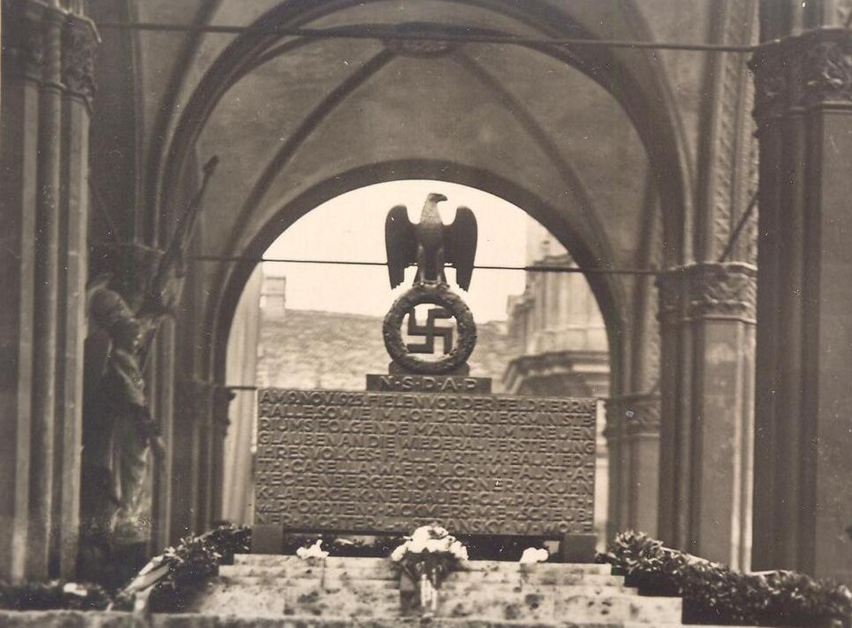

A42-POL-008 // HISTORICAL CLAIM REVIEW
Hitler's Beer Hall Putsch
Assessment: The coup attempt is firmly established; government tolerance in the trial and its aftermath materially benefited Hitler.


The precise allegation
Adolf Hitler and the Nazi Party attempted to overthrow Bavaria's government in November 1923 and march on Berlin. The attempted coup is documented, not a fabricated episode. Claims that it was secretly engineered by the Bavarian government or that Hitler's trial was simply staged overlook both the real insurrection and the political leniency that helped his movement recover.
Chronology and political context
Hitler's followers seized a meeting at Munich's Bürgerbräukeller, attempting to force Bavarian leaders into a nationalist uprising. The leaders escaped, and police shot at the march the next day, killing demonstrators and officers. Hitler was arrested and tried for treason. His short prison term gave him time to reshape the Nazi movement and write Mein Kampf.
Primary historical record
Trial transcripts, contemporary photographs, police reports, Nazi Party records, and court rulings document the putsch. The court gave Hitler a platform and treated him leniently compared with the seriousness of the charge. That leniency is documented; it does not show that Bavarian officials planned the coup or intended its violence.
Corroboration and contrary evidence
Historians agree the putsch was an attempted coup supported by nationalist allies, including Erich Ludendorff. Contemporary coverage and casualty records confirm the clashes. Debate focuses on the degree of prior coordination with Bavarian authorities and how much Hitler's strategy had shifted from a theatrical demonstration to a genuine seizure of power.
What remains uncertain
The conspirators' expectation of army support, the role of individual Bavarian officials, and the planned national government remain uncertain. Participants later rewrote their motives. Hitler's later rise encourages teleological accounts, but the 1923 effort was a failed and contingent action, not an inevitable step toward dictatorship.
Calibrated verdict
The coup attempt is firmly established; government tolerance in the trial and its aftermath materially benefited Hitler. There is no reliable evidence that officials secretly commissioned the putsch. The case is better understood as an authentic extremist uprising followed by a permissive legal response that helped normalize its leader.
What evidence could change this assessment
Private communications among Bavarian officials immediately before the event could clarify whether any had promised assistance. A full set of police and army orders might show planned resistance or collusion. These would alter the question of state complicity, not the extensive evidence that Hitler's followers attempted an armed overthrow.
Sources and source limits
- German Historical Museum — Hitler PutschMuseum chronology and images document the event; interpretive account is not a comprehensive prosopography of officials.
- Encyclopaedia Britannica — Beer Hall PutschConcise reference on the failed coup and trial; tertiary overview with compressed debate.
- Ian Kershaw, Hitler: 1889–1936 Hubris (W. W. Norton)Scholarly biography uses extensive research to analyze Hitler's early career; broader narrative rather than a dedicated trial-edition study.